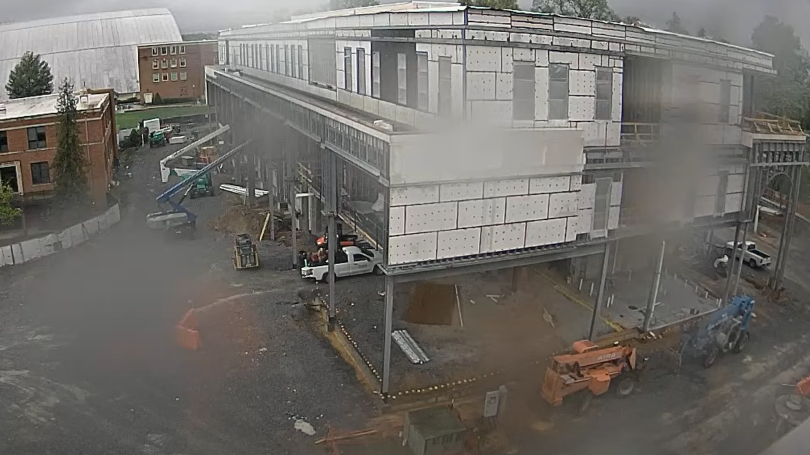
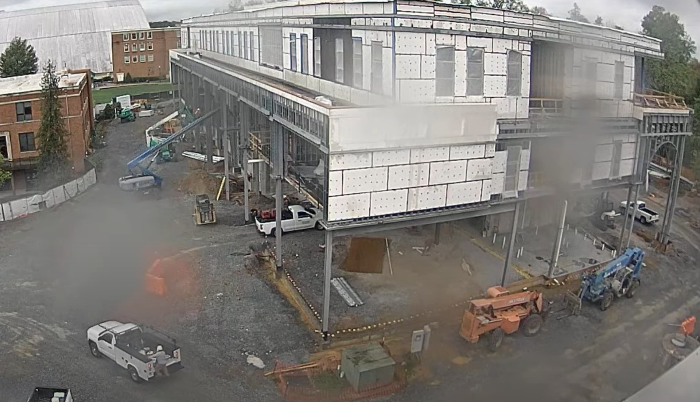
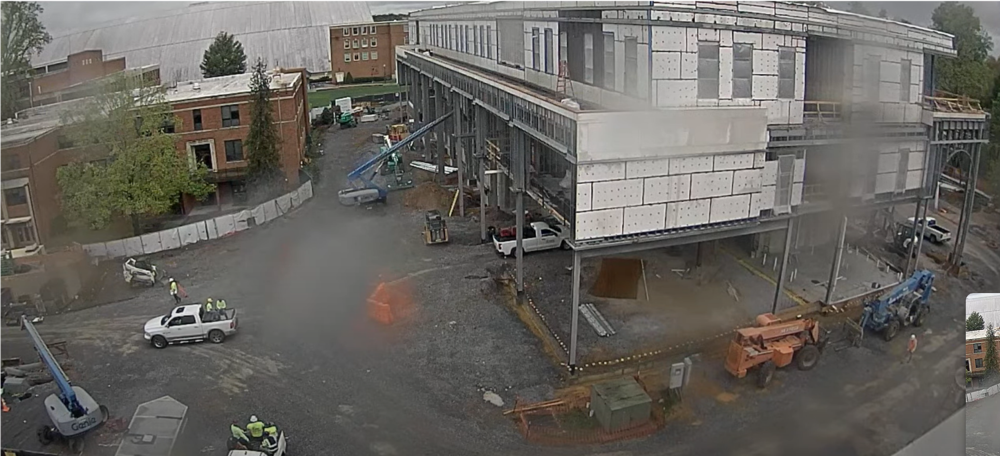

Entry 6.1
The site is clear, though it seems to have been raining throughout the morning. Rainfall was observed around 6:30 AM, with only a few crew members present at that time. As of 11:25 AM, there were still only a handful of workers on site. Rain is visible on the camera lens, and the darkened ground further indicates continued precipitation throughout the morning. Two boom lifts were in use at the back left of the building, both working on the second floor. One was positioned near the middle of a metal column, while the other was focused closer to the ceiling level. Two telehandlers remained idle at the front right side of the building. On the ground floor, two crew members were seen walking beneath the building. A truck was parked there, with one crew member in the truck bed inspecting materials starting at 11:23 AM. By 11:34 AM, the crew members had finished assessing the materials on the truck and proceeded further into the building. A utility task vehicle was parked beside the truck, gathering materials before driving off camera. This process took approximately five minutes. The utility task vehicle returned at 11:35 AM but then continued toward the right side of the building, moving out of the camera’s view.

Entry 6.3
At 11:47 AM, a crew member walked out from the first floor near the blue boom lift and began collecting what appeared to be wiring or rope from the ground. This task was completed by 11:49 AM, after which the crew member walked further into the first floor. At 11:51 AM, a service truck drove along the path near the front of the building, while another worker exited the first floor. The worker met the truck on the path and climbed onto the back. There appeared to be communication between the driver and the crew member, as the truck remained stationary until the worker was securely on board. The truck then drove off camera at 11:53 AM. Meanwhile, the green boom lift began lowering at 11:52 AM, taking approximately one minute to bring the crew member in the basket down to ground level. The worker then proceeded to walk deeper into the first floor. The total cycle time for this lift operation was approximately 45 minutes.

Entry 6.4
At 11:55 AM, a crew member was seen walking along the third floor carrying a ladder. He placed it near the front of the building before walking back. Two additional crew members were also visible on the third floor, near the cut-out area at the front of the building. On the left side of the site, four crew members were seen leaving presumably for their lunch break. At 11:57 AM, another group of four crew members exited the building in the same direction. By 12:00 PM, trucks were transporting crew members offsite, with one truck bed carrying five crew members. Activity resumed at 12:47 PM as crew members began returning to the site.
